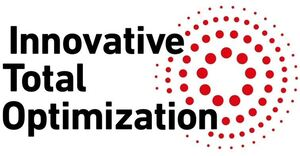

Trade Mark Journal No.2026/007 13 February 2026
WO0000001899432 (42)
Office of origin: Japan
Date of International Registration:5 December 2025
Date of designation in the UK:
5 December 2025

International priority date claimed: 10 November 2025
(Japan)
- Class 42
- Engineering; engineering consultancy services; electrical engineering; electrical engineering consultancy services; mechanical engineering; mechanical engineering consultancy services; engineering services in the field of environmental technology; engineering consultancy services in the field of environmental technology; aerospace engineering; technical consultation in the field of aerospace engineering; design and development of engineering products; product development consultation; product development for others; research and development of new products for others; testing of apparatus in the field of electrical engineering; consultancy in the field of energy-saving; scientific research in the field of energy; energy auditing; consultancy and research services in the fields of science, engineering and information technology; conducting technical project studies; research in the field of deep learning; research in the field of self-driving car technology; technical research in the field of aeronautics; quality control for others; industrial design; consultancy and information services relating to information technology architecture and infrastructure; software as a service (SaaS) services featuring computer software and providing information, advice and consultancy relating to SaaS services; platform as a service (PaaS) services featuring software platforms and providing information, advice and consultancy relating to PaaS services; infrastructure as a service (IaaS) services featuring provision of computer software and providing information, advice and consultancy relating thereto; providing virtual computer systems through cloud computing; monitoring of computer systems to detect breakdowns; computer systems integration services; computer system design; computer technology consultancy; technological consultancy services for digital transformation; data conversion of electronic information; artificial intelligence consultancy; providing scientific information, advice and consultancy relating to carbon offsetting; providing scientific information, advice and consultancy relating to net zero emissions.
MITSUBISHI HEAVY INDUSTRIES, LTD.
Representative: MIYAJIMA Manabu, KYOWA PATENT AND LAW OFFICE,, Nippon Life Marunouchi Building, Marunouchi 1-6-6,, Chiyoda-ku, Tokyo 100-0005, JAPAN